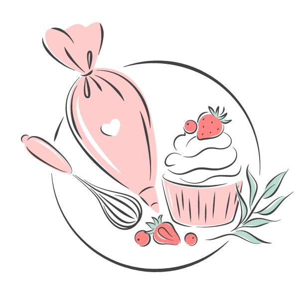

About Us
Our Mission, Values and Vision
Creating exceptional cakes is our way of life, and our customers and partners are the focus of everything that we do. Our unwavering commitment to both our customers, franchise partners & distributors is the key to our success in the future. We are dedicated to creating a dynamic environment, conducting ourselves with the highest integrity for every component in our value chain: our customers, suppliers, team members, and franchise partners. By acting in the best interest of everyone along our value chain, we are able to ensure our company’s sweet success.
Our Core values are
- All our products and services shall be offered with the same love, care, and affection as if, they were meant for the most beloved person.
- Being fair to all our customers, stakeholders and business partners, suppliers and employees. For we believe good intentions yield good products & services is to make Monginis living proof that hard-work, integrity, innovation, and continued support can lead to all levels of success.
|
Our mission is to offer gourmet cakes, pastries, cupcakes, cookies, and more that are universally enjoyed by family and friends and make SP cake is a part of all life’s celebrations and memories |
 |
Our Core purpose is to help people express their happiness in a memorable way. |
 |
Our Passion Cakes are not just our business, they are our passion. Our Gateaux, Pastires, cupcakes, swiss rolls, and savories are all baked and prepared with the same love, care, and affection that would go into preparing for our own friends and family. To us, the cakes and pastries that go out into the market are not merely our product line, but are our way to bring something we love into our customers homes |
Our Secret
|  |
SP cake only uses the finest ingredients in its products, ensuring the goods that we send out into the market are of the utmost quality. Monginis believes in order to give the Real taste of any product, real ingredients should be used & not cheaper substitutes. Our production includes a highly-customized, automated system but does not forego the importance of the human touch, while still adhering to strict quality control measures at every stage of production, packaging, and delivery. |
Our Moral Responsibility
Food Safety ISO 2020
Food Processing Sanitation/Hygiene
- The philosophical viewpoint of the Food and Drug Administration is that they would prefer to see industries bring their plants into compliance voluntarily rather than to force compliance through FDA action.
- The government rarely takes legal action against a processor without first making an inspection. The simplest examples are the finding of food products containing whole insects, very large fragments, whole rodent pellets or hairs, or in general, extraneous matter characterized by large size, indicating that the filth did not come from the raw ingredients.
Our standards
- We are a HACCP & ISO : 22000 certified company. We believe in ensuring the highest degree of sanitation and hygiene. We also follow Good Manufacturing practices levied by the AIB (The American Institute of Baking).
Our values
- We at SP cake take a moral responsibility of upholding all the Laws levied by the FDA. We believe in using the highest quality of raw materials and ingredients in our manufactured goods. We take pride in our processes which ensure consistency and ensure safety from hazardous mishaps.
- We believe in being honest and fair to all our stake holders. We strictly do not give credit nor encourage the idea of credit related transactions. Our company is a 100% interest free company. One of the very few companies in today’s times which could actually claim to be 100% interest free. We do not take interest not lend on interest.
Our Belief
- We believe in good intentions in all our practices. For we believe that good intentions will always yield good products and services. If the intent is unworthy there in an inherent flaw from the start.
© 2013–2020 SP Cake